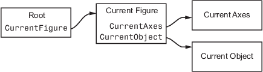

Special Object Identifiers
Getting Handles to Special Objects
MATLAB® provides functions that return important object handles so that you can obtain these handles whenever you require them.
These objects include:
Current figure — Handle of the figure that is the current target for graphics commands.
Current axes— Handle of the axes in the current figure that is the target for graphics commands.
Current object — Handle of the object that is selected
Callback object — Handle of the object whose callback is executing.
Callback figure — Handle of figure that is the parent of the callback object.
The Current Figure, Axes, and Object
An important concept in MATLAB graphics is that of being the current object. Being current means that object is the target for any action that affects objects of that type. There are three objects designated as current at any point in time:
The current figure is the window designated to receive graphics output.
The current axes is the axes in which plotting functions display graphs.
The current object is the most recent object created or selected.
MATLAB stores the three handles corresponding to these objects in the ancestor's corresponding property.

These properties enable you to obtain the handles of these key objects:
hRoot = groot; hFigure = hRoot.CurrentFigure; hAxes = hFigure.CurrentAxes; hobj = hFigure.CurrentObject;
Convenience Functions
The following commands are shorthand notation for the property queries.
gcf— Returns the value of the rootCurrentFigureproperty or creates a figure if there is no current figure. A figure with itsHandleVisibilityproperty set tooffcannot become the current figure.gca— Returns the value of the current figure'sCurrentAxesproperty or creates an axes if there is no current axes. An axes with itsHandleVisibilityproperty set tooffcannot become the current axes.gco— Returns the value of the current figure'sCurrentObjectproperty.
Use these commands as input arguments to functions that require
object handles. For example, you can click a line object and then
use gco to specify the handle to the set command,
set(gco,'Marker','square')
or click in an axes object to set an axes property:
set(gca,'Color','black')
You can get the handles of all the graphic objects in the current axes (except hidden handles):
h = get(gca,'Children');and then determine the types of the objects:
get(h,'Type')
ans =
'text'
'patch'
'surface'
'line'Although gcf and gca provide
a simple means of obtaining the current figure and axes handles, they
are less useful in code files. Especially true if your code is part
of an application layered on MATLAB where you do not know the
user actions that can change these values.
For information on how to prevent users from accessing the handles of graphics objects that you want to protect, see Prevent Access to Figures and Axes.
Callback Object and Callback Figure
Callback functions often require information about the object that defines the callback or the figure that contains the objects whose callback is executing. To obtain these objects, use these convenience functions:
gcbo— Returns the value of the RootCallbackObjectproperty. This property contains the handle of the object whose callback is executing.gcbooptionally returns the handle of the figure containing the callback object.gcbf— Returns the handle of the figure containing the callback object.
MATLAB keeps the value of the CallbackObject property
in sync with the currently executing callback. If one callback interrupts
an executing callback, MATLAB updates the value of CallbackObject property.
When writing callback functions for the CreateFcn and DeleteFcn,
always use gcbo to reference the callback object.
For more information on writing callback functions, see Create Callbacks for Graphics Objects